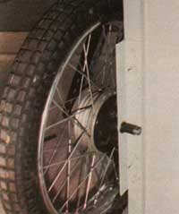
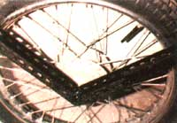
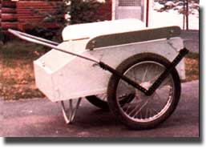

While trying to maintain my half-acre lot-which sports many trees and a large garden space-I decided that I could use a good, sturdy yard cart. Furthermore, since I live on retirement income and am a longtime MOTHER-reader, I felt that I'd either have to build one myself or do without.
With this in mind, I conducted a bit of research... and soon came across an advertisement which pictured a factory-built carryall that helped me determine the dimensions for my personalized version.
To keep costs down, I scrounged most of the needed materials. I found a bucket full of 4 " X 4 ", right-angled metal brackets at an auction ... bought carriage bolts (at a bargain, per-pound price) from a large discount supply house... purchased 5/8" exterior plywood "cutoffs" from the local lumberyard at a considerable saving (I got six pieces, each 2' X 4', for $12.50)... and obtained wheels from a friendly motorcycle dealer, who sold me a used set-complete with tires, brakes, and axles-for a mere $15.
The only parts I purchased "retail" were two 8-foot lengths of hobby angle iron (slotted) and a 10-foot length of 3/4" electrical pipe, which I had an electrician bend into a handle shape. All of the other supplies came from my collection of odds and ends stored for possible future use. (In other words, I raided my own junk pile, too!)
Only ordinary tools were used ... in this instance a saber saw, a circular saw, three wrenches, and a propane torch. And, despite the fact that I didn't have access to a full-scale workshop, it took me only about 12 hours to complete my cart.
One piece of plywood-which formed the bottom of the box-was trimmed to mea sure 24" X 43", and another piece was cut to make the two 12"-high sidewalls. I then sliced a 4 " X 8 " wedge off one end of each side and added 6" X 30" "splashboards" along the top edges. The cart's bottom is reinforced with 2 X 2's ... which I laid flat around the perimeter of the box, glued in place, and secured with screws for extra support. (I bolted the angle irons that support the inside of the axles to these 2 X 2's.)
My outriggers (the V-struts to which the wheels are mounted) were fashioned from two pieces of angle iron ... each cut to be 3 feet in length, with a 90' wedge sliced into its slotted edges at a point halfway down the bar. Each piece of iron was then bent to 90° (at the cutout wedges)... and a 1/2" washer was soldered in place at the spot where the axle would pass through the support. The axles that accompanied the wheels I obtained for the cart were 1-1/2" too long for my purposes. So, because I had no way to shorten or rethread them, I simply inserted a pipe-coupling spacer on each side.
I mounted each axle so that the leading edge of the tire was positioned 3 inches behind the front of the box. (I had calculated that the tongue weightwith a full load of wood-would be less than 20 pounds at this point.)
Care must be taken-when mounting the wheels and outriggers-to align the wheels and to block them so they remain straight while you secure them in place. (Alternatively, you might want to allow the wheels to slant inward at the bottom, ever so slightly, but only if you think that the weight of your loads will be heavy enough to cause the wheels to deflect to true position.)
The leftover pieces of slotted angle iron were used to reinforce the corners at the front and rear ends of the box. I positioned the front plywood panel at a 45° slant from bottom to top (a la wheelbarrow) to simplify dumping the cart's loads. Finally, I fashioned a support leg made of 3/4" conduit bent to suit, centered it, and mounted it about 6 inches in from the back edge of the box. (Be careful not to position the leg in such a way that you'll kick it when pushing the cart.)
Had I wanted to be more sophisticated in my design, I could've easily installed the brakes that the motorcycle dealer sold to me, utilizing a cam lever which could be attached to the handle. However, I believe in simplicity, and I didn't want to overcomplicate my project.
During the gardening "off season", I store firewood in my cart right outside the back door. It holds more than 500 pounds of split wood, is easily protected with a vinyl covering, and-after several years of use-still shows no signs of wear.
EDITOR'S NOTE: There are some fine ready-made garden carts on the market. Those of you who wish to purchase, instead of make, such a carrier will likely pick up some tips by looking over the ads in the last two issues of this magazine.
|
 Each axle is supported with angle iron that's attached to a 2 X 2. A pipe-coupling spacer takes up extra length on the axle. |
 Slotted angle iron provides additional support an the outside of the wheels |
 The handle is fashioned from bent 3/4"" conduit, as is the ""leg"" underneath the yard cart |